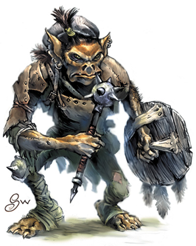

Les gobelins
Les gobelins comptent parmi les petites races intelligentes qui donnent des cauchemars aux enfants et aux adultes depuis des siècles. Bestiaux et sauvages, leur réputation de cruauté et de violence rivalise avec celle de races beaucoup plus grandes.
Physiologie
Goblins are small, black-hearted, selfish humanoids that lair in caves, abandoned mines, despoiled dungeons, and other dismal settings. Individually weak, goblins gather in large—sometimes overwhelming—numbers. They crave power and regularly abuse whatever authority they obtain.
Les mâles gobelins mesurent en moyenne 1,10 mètre, leur taille pouvant varier entre 90 cm et 1,20 m. Les créatures les plus petites sont cependant sous-représentées de par le fort taux de mortalité dans une société tribale hautement compétitive comme l'est celle des gobelins. En comparaison avec d'autres créatures humanoïdes, généralement plus grandes qu'eux, ils ne sont pas très forts physiquement, mais sont relativement robustes. Leur corps est dépourvu de graisse et leurs muscles sont noueux et nerveux. Cette petite masse musculaire les rend d'ailleurs plus lourds que ce que l’on pourrait supposer, pesant environ 25 kg. Les femelles tendent à être 10 à 15 cm plus petites que les mâles mais sont généralement plus lourdes, pesant autour de 27 kg. Elles sont essentiellement sédentaires et se consacrent aux enfants.
Les gobelins ont une apparence effrayante, même à la lumière du jour. Ils possèdent une large bouche surdimensionnée garnie de canines protubérantes, des griffes dégoûtantes aux mains et aux pieds, et une peau marron graisseuse. Leur visage est laid et animal, dépourvu de pilosité faciale. Leurs cheveux noirs sont souvent longs, leurs oreilles très grandes et pointues, leur large nez aplati dépasse à peine de leur visage, et leurs yeux sont orangés. Notons également que l’odeur du gobelin est insoutenable. Que ce soit à cause de leurs tanières crasseuses remplies d’immondices et autres déjections ou à cause de leur corps naturellement dégoulinant d’une sueur huileuse, les gobelins puent. Cette odeur est particulièrement détectable dans les endroits clos, mais partout où ils sont passés leur puanteur est palpable.
Compte tenu de leur apparence, on pourrait en déduire que ces créatures sont stupides. Mais tirer une telle conclusion serait commettre une terrible erreur. Aussi intelligents que les humains, les gobelins sont beaucoup plus rusés et dangereux qu'eux. Agiles, les sens aiguisés et pouvant voir dans le noir, ils possèdent un don incroyable pour se dissimuler et détectent d'ailleurs souvent leurs ennemis longtemps avant d'être eux-mêmes découverts.
Les gobelins préfèrent l’action à la parole, mais lorsqu’ils doivent parler ils utilisent le langage strident et guttural des gobelinoïdes, leur voix ayant tendance à être un peu plus aiguë que celle des humains. La plupart des gobelins comprennent et parlent aussi le commun.
Goblins belong to a family of creatures -called goblinoids. Their larger cousins, hobgoblins and bugbears, like to bully goblins into submission. Goblins are lazy and undisciplined, making them poor servants, laborers, and guards.
Au sein d’une même tribu, la couleur des yeux (du rouge sanglant au jaune pisseux), la taille, le poids et les caractéristiques du visage varient considérablement d’un individu à l’autre. Le seul trait commun partagé par tous se trouve être la couleur de la peau. Présentant toujours une nuance de rouge, orange ou jaune, la couleur de peau est un caractère génétique relativement homogène dans une même tribu. Relativement, car dans un groupe de plus de 50 gobelins, certains présenteront toutefois des variations de couleur par rapport aux autres, et dans une très grande tribu on observera même un large spectre de couleurs portées par une minorité de membres. Cette différence n'est toutefois pas un signe discriminatoire.
Avec style
Bien que brutaux et vulgaires, les gobelins sont de façon peu commune soucieux de leur apparence. Cela se manifeste par le fait de s’affubler de toutes sortes d’ornements visant à modifier et embellir (selon des critères purement gobelinoïdes) leur corps. C'est aussi pour un individu un moyen de se démarquer de la masse de la multitude anonyme de la tribu. Une technique répandue chez les mâles et les femelles adultes est de se percer les oreilles avec des anneaux en métal plus ou moins précieux. Les gobelins adorent également s'adonner (sur eux-mêmes ou sur les autres) au tatouage et à la scarification, déclinant les thèmes de la guerre, de la haine et de la mort. Les cicatrices et autres blessures de guerre sont arborées fièrement et contribuent à augmenter le statut social de celui qui les porte.
Le sens du style gobelin ne s’étend toutefois pas aux habits qu’ils portent, lesquels sont souvent usés et déchirés. Les gobelins fabriquent de grossiers vêtements en cuir mais préfèrent surtout passer leur temps à rechercher auprès des autres quelque chose d’intéressant à voler. Les mâles portent des vêtements (culottes, vestes et capes) sombres et les femelles des habits simples, amples et larges, qui s'adaptent mieux aux périodes cycliques de la maternité.
Cycle de vie
La majorité des femelles sont considérées comme étant la propriété commune d’un petit groupe restreint au chef, au prêtre ou aux héros de la tribu. Heureusement pour elles, tout gobelin comprend l’importance des femelles dans la survie et la réussite de la tribu, ce qui leur empêche d’être trop maltraitées et leur permet souvent d’échapper aux brutalités et à la violence de la vie tribale. Seules les femelles malades ou trop vieilles pour continuer à procréer sont systématiquement abattues (et la plupart du temps dévorées !). Les femelles sont incroyablement fertiles et, une fois enceinte, il ne faut que 5 mois pour qu’elles mettent bas. Généralement entre 30 et 40 % des nouveaux nés sont des filles et 8 à 12 semaines après avoir accouchée, une gobeline peut à nouveau être enceinte. La plupart des femelles donnent naissance à 2 ou 3 jeunes dans l’année ; celles qui restent non fertiles trop longtemps sont considérées comme maudites (couic couic).
Les jeunes gobelins sont capables de ramper à 3 mois et de marcher au bout de 6. A la fin de leur première année, leurs crocs sont formés et une grossière chevelure noire recouvre leur tête. Dès lors ils peuvent se nourrir de viande, libérant les femelles pour allaiter la portée suivante. A 3 ans, les jeunes gobelins sont livrés à eux-mêmes et doivent apprendre à survivre et à se battre pour la domination et la nourriture. A l’âge de 9 ans, un gobelin devient adulte. Même si l’espérance de vie moyenne normale d’un gobelin est de 50 ans, peu, hormis les femelles et les prêtres, survivent au-delà de 20. Les mâles perdent le plus souvent la vie lors des pillages perpétrés à l’extérieur de la tanière, ou sont victimes de machinations prouvant leur incompétence et démontrant leur faiblesse au sein de la tribu. Des groupes entiers de gobelins sont également sacrifiés au Tout Puissant s’ils ont échoués à ramener des prisonniers ou de la nourriture lors des raids.
Alimentation
L'alimentation des gobelins est variée mais la viande est de très loin leur plat préféré. Insectes, serpents, chauve-souris, rats et autres vermines forment la base alimentaire de la tribu. Ceux qui vivent proche de la surface jettent également leur dévolu sur les mammifères, les oiseaux et les poissons pour se nourrir. Les gobelins pratiquent également le cannibalisme sur les plus faibles (jeunes, vieux, malades, stériles ou morts) et dévorent toutes sortes de charognes (peu importe leur état de putréfaction) mais évitent autant que possible de consommer des fruits et des légumes. Il a déjà été rapporté que des gobelins cultivent des champignons et autres fungi mais, si cela est vrai, cette pratique reste peu répandue et les gobelins n’ont jamais été vus en train de cultiver des champs de champignons.
Mais les gobelins épuisent toutes les sources de nourriture sans jamais planifier leurs besoins, forçant les tribus à migrer lorsqu’un territoire devient insuffisant pour nourrir leur nombre toujours croissant. Ce cycle d'abondance et de rareté entraîne de nombreuses tribus à la famine et à la ruine. Le cannibalisme durant ces périodes difficiles est une solution nécessaire permettant d’apaiser la faim insatiable des membres de la tribu, bien qu'ils soient capables de tenir 5 à 6 jours avant de subir les premiers effets néfastes dus aux privations.
Habitat
Les gobelins peuvent survivre presque n’importe où du moment qu’il y a de l’air, de l’eau et quelque chose à manger (peu importe quoi), mais s’ils en ont l'opportunité, ils préféreront s’établir dans un repère souterrain. Les gobelins sont en effet particulièrement bien adaptés à cet environnement hostile et impitoyable. Ils pourraient d'ailleurs faire leurs l’adage « pour vivre heureux, vivons cachés » s’ils n’étaient pas aussi pillards et voleurs dans l’âme ! Mais les villes n’offrent leurs récompenses qu’en prenant de très grands risques.
Historiquement, lorsque les elfes noirs (drows) et les nains gris (duergars) ont commencé à étendre leur territoire, ils ont massacré et réduit en esclavage nombre de gobelins. Les survivants émergèrent alors à la surface en grand nombre, fuyant des ennemis trop puissants, à tel point qu'il est maintenant rare de trouver des gobelins libres vivants sous la surface de la terre. Ceux qui ont survécus ont fui loin et sont devenus des experts dans la pose de pièges et l’organisation d'embuscades.
L’ASCENSION
Il y a bien longtemps, le Tout Puissant regarda le nouveau monde, les races et où elles s’étaient établies. IL vit le stupide dieu orc envoyer inlassablement son peuple contre les races bonnes dans l’espoir de s’emparer de leurs territoires. IL savait qu’IL ne pourrait jamais reproduire l’esprit d’initiative des humains, l’ingéniosité des gnomes, l’endurance au labeur des nains ou la majestuosité des elfes mais IL trouva un moyen dans son sombre cœur pour les défaire tous. IL se retira dans les ténébreuses profondeurs souterraines et créa la race des gobelins. IL les fît petits et furtifs, afin qu’ils puissent échapper à leurs ennemis, et les dota aussi d'une grande ruse afin de leur permettre de tromper leurs ennemis et de les frapper vicieusement au plus profond de la nuit, en tous lieux et à toute heure. Plutôt que de bâtir ou de construire, ils prendraient tout ce qu’ils voudraient aux plus faibles. Ainsi les plus puissants parmi eux domineraient et les faibles seraient impitoyablement éliminés, les dressant les uns contre les autres en une lutte perpétuelle pour la survie et la domination. Plus tard, IL leur apprit aussi à haïr la vie et la beauté, leur ordonnant de les détruire partout où elles étaient.
Après un siècle de guerre dans les profondeurs souterraines contre d'autres races, les prêtres du Tout Puissant annoncèrent le Temps de l’Ascension et de nombreuses tribus migrèrent à la surface. C’est ainsi que, depuis des siècles, les adeptes du Tout Puissant s’étendent et envahissent toutes les terres connues.
Aujourd’hui la majorité d'entre eux vivent donc dans des tunnels creusés dans la terre, comme des grottes d’ours ou des mines, abandonnées ou conquises par la force. Leur alliance avec les worgs, pour la plupart des tribus, leur a en effet permis d'étendre leur influence à la surface, principalement dans les collines et les montagnes. Quand il n'est pas possible de trouver un refuge souterrain, une tribu recherchera des ruines ou toutes autres structures abandonnées afin de s’y installer. En dernière recours, ils se construiront des abris avec tout ce qui est disponible sur place. Mais les gobelins ne sont pas de bons bâtisseurs et de telles constructions seront toujours mal conçues, faites de bric et de broc et très inesthétiques. Alors, contrairement à leurs parents hobgobelins, les gobelins comptent principalement sur leurs talents de camouflage pour se protéger, construisant rarement des palissades de bois ou des murs de pierre autour de leur repère.
Un autre habitat de surface naturellement inhospitalier pour les autres races mais où les gobelins ont réussi à s’adapter sont les étendues marécageuses. Elles constituent une protection naturelle à la tribu, même proches d’une ville ou d'une route, tout en offrant une abondante source de nourriture pour ceux qui ne sont pas trop regardant.
Migration
Rien n’est plus tentant pour des hobgobelins ou des orcs que de partir en guerre contre une tribu gobeline en mouvement. De telles migrations finissent en effet souvent en désastre, car il est extrêmement difficile d’organiser et de coordonner les déplacements d’une tribu de gobelins. Compte tenu des risques inhérents, les chefs gobelins sont peu enclins à les proposer, mais la propension de cette race à piller et à dégrader leur environnement les oblige pourtant régulièrement à se déplacer.
Afin de trouver un nouveau territoire, des éclaireurs sont envoyés loin à la recherche d’un endroit approprié. Ils reviennent ensuite faire leur rapport sur les ressources disponibles et les populations ennemies. Les gobelins étant obsédés par le fait d'éviter de se retrouver en état de soumission, ce dernier point est un facteur majeur dans la sélection d'un nouveau repère. Cela poussent même certains chefs à choisir des territoires plus pauvres en ressources, et où la tribu aura donc plus de mal à vivre, ce qui parfois donne naissance à une période de troubles et de changement de mains du pouvoir, certains gobelins s’opposant par la force à la sagesse de leur chef.
Le principe adopté lors de la migration n’est pas la vitesse, mais la discrétion du mouvement. Une fois le nouvel emplacement choisi et l’itinéraire déterminé, la tribu se déplace en petits groupes répartis sur plusieurs nuits. Ce processus peut s’étirer sur plusieurs semaines pour les tribus très nombreuses.
Terrier
Goblins festoon their lairs with alarms designed to signal the arrival of intruders. Those lairs are also riddled with narrow tunnels and bolt-holes that human-sized creatures can't navigate, but which goblins can crawl through with ease, allowing them to flee or to circle around and surprise their enemies.
Indépendamment de l’endroit où ils s’installent, les gobelins mettent en place un large périmètre piégé à l’aide de fosses garnies de pieux pointus et qui visent, au pire à ralentir l’ennemi, au mieux à le capturer ou le blesser, voire plus rarement à le tuer. Les gobelins apportent une attention particulière au camouflage de leur repère, qu'ils appellent le "terrier", et font en sorte de ne pas laisser de traces ou d’indices derrière eux permettant de remonter jusqu’à celui-ci. La torture et la mort attendent les gobelins qui par négligence ont été suivis ou ont conduits des créatures ennemies (en gros tout ce qui ne ressemble pas de près ou de loin à un gobelin) jusqu’au terrier où se cache la tribu.
CORPS SAINS, ESPRITS MALADES
Les gobelins jouissent d’un extraordinaire système immunitaire. Vivant dans des souterrains privés de systèmes d’évacuation, au milieu de charognes, vermines et autres immondices baignant dans une eau sale et croupie (par préférence raciale pour un tel environnement ou plus simplement parce qu’ils dégradent tous les endroits qu’ils colonisent), les gobelins semblent immunisés aux maladies naturelles et insensibles aux parasites prospérant dans de telles conditions. Il a toutefois été observé qu’un gobelin malade devenait rapidement la cible facile des autres gobelins, ce qui est également un moyen efficace d’enrayer la propagation des maladies, en éliminant rapidement son porteur.
Ces souterrains forment généralement un dédale labyrinthique où s’entrecroisent couloirs et salles et où se multiplient les passages sans issue. Cet environnement chaotique désoriente souvent les ennemis et permet d’assurer une meilleure défense du territoire. Les gobelins, bien que souvent très paresseux, sont des mineurs experts, capables d’aménager et de transformer une petite grotte en un vaste repère tentaculaire. Les tunnels creusés ainsi sont bien souvent trop étroits pour permettre le passage aux humanoïdes plus grands et plus larges autrement qu’à quatre pattes et sans armure trop lourde ou équipement trop encombrant. Là aussi, les passages et les endroits stratégiques seront piégés.
On dit que même un orc trouverait sale la caverne d’un gobelin. Vrai ou pas, les conditions insupportables de vie dans les dédales gobelins sont devenues légendaires pour leur saleté. Les gobelins semblent n’avoir aucun concept d’hygiène personnelle ou collective. Ils peuvent vivre dans et au milieu des excréments, se nourrissant de charognes pourries à moitié dévorées sans problème, dévastant et pillant rapidement l’endroit où ils viennent de s’installer faisant de toute tribu gobeline un véritable fléau. Contrastant avec la saleté des souterrains, les murs des grottes où se terrent les gobelins sont souvent recouverts de peintures grossières et primitives. Ces représentations murales racontent souvent les exploits de la tribu ou représentent également quelques thèmes religieux (feu et flammes, lune, tête de mort, os, tibia, etc.). Bien que n’étant pas artistiquement remarquables, en comparaison du travail d'autres races, ces peintures offrent une image contrastée du gobelin que l’on se représente habituellement comme un monstre bête et brutal.
Société
Goblins have an affinity for rats and wolves, raising them to serve as companions and mounts, respectively. Like rats, goblins shun sunlight and sleep underground during the day. Like wolves, they are pack hunters, made bolder by their numbers. When they hunt from the backs of wolves, goblins use hit-and-run attacks.
Les forces qui motivent la conduite d’un gobelin sont puissantes, profondes et tortueuses. Mi-culturelle, mi-instinctive, elles sont un mélange de peur, de désir, de haine et de frustration qui mène le gobelin à une vie morne, triste et d’une cruauté sauvage inouïe. Individuellement et en petits groupes, les gobelins sont conscients de leur vulnérabilité. Les hobgobelins, les orcs et d'autres créatures encore plus malfaisantes peuplent leur monde, attendant de les réduire en captivité, de les tuer ou de les dévorer vifs, et les races bonnes sont prêtes à les exterminer dès qu’ils quittent l’ombre sécurisante de leur repère. Cette prudence nécessaire à leur survie a contribué à répandre le mensonge de la « couardise gobeline ». Dans une certaine mesure cela est vrai. Un gobelin isolé cherchera à éviter une bataille ouverte en territoire ennemi et préférera opter pour la fuite. Mais en nombre suffisant, il fera face à n’importe quel ennemi.
Dès les premiers instants de son existence, un gobelin connait le prix à payer s'il fait preuve de la moindre faiblesse, s’il échoue ou s’il commet une erreur d'allégeance. S’il atteint la maturité, un gobelin sera bien acclimaté à son environnement et aura appris à évoluer avec prudence, obéissant aux plus forts et exploitant les plus faibles. Il sera prêt à tout pour n’être jamais celui qui sera le dernier, le plus faible ou le plus lent. Tout comme ils sont toujours à l'affût d'un autre gobelin à dominer, ils sont également très attentifs à l’attitude de leurs leaders. Chacun d’eux sait que leur propre statut peut être amélioré si un plus fort venait à tomber. Les leaders gobelins sont généralement conscients de ce danger et s'efforcent de garder la tribu suffisamment occupée en envoyant fréquemment différentes factions en exploration, pillage et combat.
Ordre social
Goblins are ruled by the strongest or smartest among them. A goblin boss might command a single lair, while a goblin king or queen (who is nothing more than a glorified goblin boss) rules hundreds of goblins, spread out among multiple lairs to ensure the tribe's survival. Goblin bosses are easily ousted, and many goblin tribes are taken over by hobgoblin warlords or bugbear chiefs.
Diriger par la force et la terreur est le credo des chefs gobelins. Ils n’ignorent pas qu’il y a toujours des gobelins prêts à prendre leur place au moindre signe de faiblesse. Cette méthode de fonctionnement façonne toute la culture tribale des gobelins. Chaque gobelin fait preuve d’une déférence absolue envers ceux qu’il estime plus fort que lui, et commande ceux qui lui sont plus faibles, donc inférieurs. Les membres de la tribu situés au bas de cet ordre social sont appelés « Il-Mûk » (littéralement « sans voix ») et vivent une morne existence faite de coups, de brimades et de servitude. Quand une vie doit être sacrifiée, à un ennemi ou une divinité, il est certain que ce sera celle d’un Il-Mûk (ou d’un prisonnier, on peut supposer).
Le règne d’un chef gobelin sur toute une tribu peut durer de quelques heures à quelques années. Rare est le chef gobelin qui parvient à se maintenir au pouvoir pour une période plus longue. Le chef est généralement un guerrier fort et/ou rusé, mais le Tout Puissant encourage aussi ses prêtres à rechercher les positions sociales les plus élevées. Il est même possible, de temps à autres, qu’un roublard puisse atteindre ce statut, grâce à sa traîtrise, sa duplicité devenant un modèle pour la tribu. Le chef préside à toutes les questions de la vie militaire ou domestique, partageant ce pouvoir avec les prêtres et les plus puissants guerriers de la tribu. Il rend également les jugements et détermine les sanctions appropriées à ceux qui dérogent à ses lois. Les criminels sont jugés rapidement. Les peines sont sévères, même pour des petites infractions, mais pas toujours mortelles. Marquer au fer rouge, crever un oeil, briser un membre, ou toute sanction visant à affaiblir la position du criminel au sein de la tribu constituent les fondements du système judiciaire gobelin. Ces peines sont toujours brutales afin d’envoyer un message clair, et les coupables sont punis publiquement.
Les tribus gobelines ne comptent généralement pas plus de 200 individus mâles. Des tribus plus importantes existent certainement mais nécessitent la présence d’un chef très puissant. Les femelles et les jeunes peuvent être divisés en groupes communautaires ou logés tous ensemble. Les hommes vivent au milieu des femmes mais dorment par petits groupes en fonction de leur statut ou de leur rôle. Le chef et d'autres gobelins importants ont presque toujours des chambres distinctes, souvent avec des femelles qui les y attendent.
Esclavage
L'esclavage est bien établi dans la société gobeline. Les esclaves sont souvent le résultat de combat avec des groupes d'autres races de petites tailles. Les gobelins n’asservissent presque jamais d'autres gobelins et les grandes créatures se révèlent en pratique difficile à contrôler. La plupart des esclaves ont donc tendance à être des gnomes, des halfelins et des humains. Les fermes isolées et les petites caravanes sont des sources fructueuses de prisonniers, mais les gobelins font rarement un raid uniquement dans le but d'acquérir des esclaves. Ils ont tendance à les considérer simplement comme un peu plus de butin.
CAPTIVITÉ ET ÉVASION
Les gobelins captifs tentent rarement de se révolter ou de s'échapper. Ils sont obéissants, bien que paresseux, restant serviles aussi longtemps que la main qui les dirige est assez forte. Une telle attitude peut paraître surprenante, mais ceux qui cherchent à comprendre ce comportement doivent tenir compte cependant des éléments suivants :
Premièrement, malgré de mauvaises conditions de captivité, celles-ci restent souvent rarement moins bonnes que ce que les gobelins ont l’habitude de connaître dans leurs cloaques souterrains, lorsqu'ils sont livrés à eux-mêmes. Un gobelin connaît, depuis le jour de sa naissance, la faim et les châtiments injustes et cruels infligés par plus fort que lui. Que l'oppression qu'ils subissent soit de la part d’un des leurs ou d’un ogre ignoble, cela revient finalement au même. Dans les deux cas, les chances de finir dans la gamelle du chef en cas d'infraction restent les mêmes.
Deuxièmement, une rébellion ou une tentative d’évasion est un acte de coopération. Et les gobelins ne coopèrent pas efficacement, et ne parviendront pas à le faire sans l’intervention d’une autorité (souvent extérieure) s’imposant à eux. Un gobelin incitant ses camarades de chaines à la rébellion ou à l’évasion est presque toujours certain de se voir dénoncé ou trahi dans l’espoir d’obtenir une récompense personnelle ou un meilleur statut.
Les esclaves qui sont trop vieux, trop jeunes ou malades sont tués et jetés comme viande aux autres prisonniers qui, face au danger de mourir de faim et d’être eux-mêmes dévorés, optent pour la plupart pour ce macabre festin. Mais pour horrible qu'il soit d’être forcé au cannibalisme, ce n’est malheureusement pas la seule vilenie que vont subir ces esclaves. Souvent victimes eux-mêmes, les gobelins prennent un plaisir pervers à la torture et à la souffrance des autres. Les esclaves mâles doivent travailler de 12 à 16 heures par jour, à creuser, cultiver ou simplement occupés en d’inutiles labeurs pour le seul plaisir de leurs ravisseurs. Les esclaves femmes sont nettement moins bien loties. Elles effectuent les tâches domestiques sous la surveillance des cruelles femelles gobelines de la tribu. La plupart se retrouvent dans des bordels ou sont affectées comme nourrices. Et s’occuper d’un groupe de jeunes gobelins est horrible, car inévitablement ils tuent et dévorent leur nourrice captive lorsqu’ils sont sevrés. Le culte religieux requiert également de nombreuses victimes sacrificielles et les esclaves sont systématiquement utilisés lorsqu’il y en a de disponibles. Lorsque l’heure arrive, les gobelins obligent les esclaves à choisir qui, parmi eux, sera envoyé à la mort. Ce processus d'attente d'être élu à mourir est un autre des nombreux aspects de la captivité qui poussent beaucoup d'esclaves à la folie.
Captivité
De fait, l'un des plus puissants moteurs de la tribu gobeline est son désir de ne pas être capturée elle-même. De nombreuses races utilisent les gobelins comme esclaves et sont toujours à l'affût d’une occasion d’en avoir plus. Une grande partie de l’énergie de la tribu est ainsi dépensée à rester libre et éviter à tout prix la captivité. Heureusement pour eux, les gobelins capturés ont tendance à bien s’adapter à ce mauvais sort. En raison de leur paresse, les gobelins sont généralement des travailleurs improductifs. Ils ne travailleront que s’ils sont placés sous étroite surveillance et menacés de douloureux châtiments, ce qui fait que le résultat vaut rarement l’effort investit pour les faire travailler. Par conséquent, l'utilisation la plus courante d'un gobelin esclave est d’en faire un fantassin.
Si un gobelin est assez chanceux pour être enrôlé dans l'armée d'un seigneur de guerre, il sera armé et aura un bouclier, peut-être même une armure. Mais le plus souvent ils sont incorporés de force dans des armées orcs ou hobgobelines, et contraints de prendre sur le terrain tout ce qu'ils peuvent trouver pour s'équiper, ou combattre avec rien du tout. Bref, ils sont purement utilisés comme chair à canon et servent de force de diversion contre l'ennemi. Face à une mort probable, de la part de l'ennemi ou de leurs maîtres, les gobelins font donc des soldats, au mieux, peu fiables. Ils fuient le champ de bataille ou se rendent à l’ennemi dès qu’ils en ont la possibilité.
Fabriquer ou prendre
Les gobelins adhérent à l'ancienne philosophie « pourquoi faire alors que vous pouvez prendre ? ». Cette philosophie explique qu’ils choisissent de s’installer raisonnablement proches de terres habitées, car l'un des principaux objectifs des raids gobelins est généralement l'acquisition de nourriture, d’outils, d’armes et d'armures. Étant trop paresseux et négligents pour prendre soin de leurs affaires, tout ce qu’ils possèdent devient ou est généralement en mauvais état. Les plus forts combattants prennent le meilleur équipement, souvent violemment, mais toute véritable richesse est la propriété de la tribu. La plupart des gobelins ne voient que peu d'or et de pierres précieuses.
Relations
Au fil des siècles, les gobelins se sont croisées et mélangés avec de nombreuses autres tribus. Leur race a ainsi développé une remarquable tolérance envers les autres tribus gobelines. Lorsque deux tribus gobelines se rencontrent, la tribu la plus forte absorbe la plus faible, souvent après seulement quelques effusions de sang mineures. Les individus de la tribu la plus faible devront lutter pour gagner leur place au sein de la nouvelle tribu. Une fois qu'ils en feront partie, ils seront traités comme tout autre gobelin (c'est-à-dire mal). La raison de ce comportement tolérant trouve ses racines dans leur tendance raciale à se regrouper et en leur croyance au fait que le nombre apporte la sécurité et que l’union fait la force. De toutes façons, quelle que soit la véritable raison, il est plus souvent préférable de fusionner que d’être en concurrence.
Ennemis
Les gobelins ressentent de la haine envers toutes les créatures mais vouent pour les nains, qu'ils ont combattus pendant des siècles sous la terre, une haine particulière. Il y a également une longue tradition de conflits avec les kobolds et les gnomes, qui sont souvent en concurrence directe pour un même territoire avec les gobelins. Et de même qu'ils chassent les créatures plus faibles qu’eux, les gobelins sont eux-mêmes chassés par des races plus fortes. Depuis des temps immémoriaux, orcs, hobgobelins, gnolls et autres humanoïdes du même type sont de fréquents et dangereux ennemis des gobelins qui asservissent souvent tout ou partie d’une tribu et tout aussi souvent extorquent un tribut permanent en esclaves, or et marchandises de toutes sortes.
Les gobelins ne peuvent en effet que très rarement résister à ces créatures une fois qu'elles ont repéré leur terrier. Mais ceci n'est toutefois pas tache facile, car les gobelins mettent tout en oeuvre pour dissimuler leur repère lorsque la présence d'un ennemi est détectée. En dernier recours, le déménagement s'impose souvent. En cas de conflit, et si cela s'avère possible, les gobelins lancent des raids et des attaques surprises sur l’arrière-garde ennemie et éliminent les unités d’éclaireurs. De cette façon, par le biais de la furtivité et de la surprise, les gobelins peuvent parvenir à éliminer un ennemi plus puissant, à l’usure.
Religion
Maglubiyet the Mighty One, the Lord of Depths and Darkness, is the greater god of goblinoids. Envisioned by most goblins as an eleven-foot-tall battle-scarred goblin with black skin and fire erupting from his eyes, he is worshiped not out of adoration but fear. Goblins believe that when they die in battle, their spirits join the ranks of Maglubiyet's army on the plane of Acheron. This is a "privilege" that most goblins dread, fearing the Mighty One's eternal tyranny even more than death.
La religion occupe une place importante chez les gobelins, et les prêtres sont craints et redoutés car une tribu gobeline se trouve souvent en difficulté et a besoin de la protection divine. Malheureusement les dieux des gobelins ne sont guère sympathiques et répondent souvent à l’appel de leurs ouailles en exigeant d'eux encore plus de sang et de violence, souvent dirigée contre les mêmes ennemis contre lesquels ils avaient imploré la protection de leur divinité. C'est en fait la peur qui pousse les gobelins à vénérer leurs divinités, même si elles sont indifférentes à leurs problèmes. Ils retrouvent la vraie nature gobeline dans le comportement et les agissements de leurs dieux, ce qui a forgé leur culture.
LE TOUT PUISSANT
De nombreuses divinités appartiennent au panthéon gobelin mais aucune n’est si universellement adorée par eux que le Tout Puissant, que les non-gobelins appellent Maglubiyet. Cette divinité violente apparaît comme un énorme gobelin entièrement noir aux yeux enflammés. Les gobelins et les hobgobelins le vénèrent, chacune de ces races se prévalant d'être la première dans le cœur du Divin. Le Tout Puissant est un dieu brutal qui exige l’obéissance et la souffrance de la part de ses adorateurs. Il déteste toute forme de vie et encourage son peuple à répandre la guerre et la violence. La période la plus sacrée pour ceux qui vénèrent Le Tout Puissant est la nouvelle lune. Cette nuit est toujours propice aux révélations les plus sordides servant à répandre un mal indicible.
Maglubiyet, le Tout Puissant, requiert de fréquents sacrifices et une très grande quantité de sang. Les prisonniers sont sacrifiés après une victoire, avant une importante attaque ou tout événement important nécessitant le bénédiction des dieux (autant dire que ça arrive souvent). S'il n’y a pas assez d’esclaves sous la main, les plus faibles de la tribu les remplacent tout aussi efficacement, ce qui explique la grande motivation des gobelins pour les pièges de toutes sortes visant à capturer de nouveaux préposés au sacrifice.
Les cérémonies se déroulent toujours dans une liesse des plus exacerbées, au son des tambours frappés à grands coups rageurs de fémurs sur des peaux tendues à l’extrême (le plus souvent humaines, car elles produisent un meilleur son). Des danses frénétiques et un tintamarre endiablé rythment ces cérémonies démentes où tous les gobelins s’amusent, car il n’est pas rare que les victimes soient torturées et humiliées dans les premiers stades du rituel afin d’exciter les gobelins et d’attiser la soif de sang de toute la tribu. Malheur aux faibles et aux malchanceux... Les gobelins détestent toute forme de vie et de beauté, de manière absolue.
Traduit par blueace